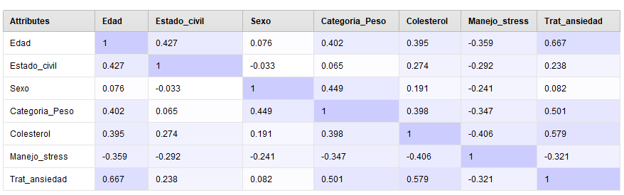

Predicción de segundo ataque cardíaco
Datos utilizados entrenamiento: data set cardiológico training
Datos utilizados test: data set cardiológico entrenamiento
El presente data set consta de información de pacientes :
En primer lugar siguiendo el modelo CRISP-DM se procede a la comprensión del área de estudio, la misma refiere a mediciones de diferentes variables
de pacientes cardiológicos. El cardiólogo desea poder contar con un sistema que le permita inferir partiendo de datos observados del paciente si
hay riesgo de sufrir un nuevo infarto o no. Cuenta con datos históricos de pacientes y variables medidas que científicamente se utilizan como indicadores proxy para
predecir enfermedades coronarias.
El doctor cuenta en su registro con información histórica de pacientes que sufrieron un infarto y por tanto hay datos que ya tiene etiquetados debido a que los pacientes fallecieron (ya confirmó la
posibilidad de sufrir un nuevo infarto o no). Por tanto nos encontramos frente a un problema supervisado.
Por otro lado queremos determinar una clasificación de los pacientes en dos grupos, aquellos que sí tienen riesgo de sufrir un 2do infarto
y los que no, por lo que estamos ante un problema de clasificación.
Procederemos primero a la comprensión de los datos, observamos los atributos medidos y su significado:
Atributo |
Tipo de atributo |
Rango |
|---|---|---|
| Estado_civil: Asume los valores: 0 = soltero; 1 = casado, 2 = divorciado y 3 = viudo. | categórica más de 2 clases | 0-3 | Sexo: Asume los valores 0 = femenino; 1= masculino. |
categórica - dummy | 0-1 | Categoria_Peso: Toma tres valores: 0 = normal; 1 = sobrepeso; 2 = obeso. |
categórica en números | 0-2 | Colesterol: nivel de colesterol de la persona, tal como se ha registrado en el momento del tratamiento indicado cuando su más reciente ataque al corazón. |
continua | 122 - 239 | Manejo_stress: Indica si el paciente ha participado previamente de cursos de manejo del estrés: 0 = no; 1 = si. |
categórica - dummy | 0-1 | Trat_ansiedad: Atributo que toma valores de tipo entero entre 0 y 100 indicativo del nivel natural de estrés de cada persona y de su habilidad para manejarlo. |
categórica entendida como continua | 35-80 |
En cuanto a la variable Trat_ansiedad resulta de una prueba aplicada al paciente luego de sufrir el 1er ataque cardíaco,
a cada paciente se le administró un test de ansiedad natural estándar.
Los valores están tabulados en incrementos de 5. Un valor de 0 indicaría que la persona nunca siente ansiedad,
presión o estrés en ninguna situación, mientras que un valor de 100 indicaría que la persona vive en un estado continuo
de sobrecarga e incapaz de lidiar con su situación.
El atributo 2do_Ataque_Corazon existe solamente en el dataset de entrenamiento. Es la variable objetivo o de predicción (“label” en RapidMiner).
En el dataset de entrenamiento, este atributo contiene “Si” para aquellos individuos que han sufrido un segundo ataque al corazón, y “No” en caso contrario.
Analizados los atributos se estudian con más detalle los factores que pueden perjudicar cualquier modelo como ser los rangos de los mismos, valores missing y outliers.
Observamos a continuación el resumen de estadísticos que ofrece RapidMiner:

Como se observa en esta imagen los 0 indican que no hay atributos faltantes (missing),
los rangos no denotan valores anormales (outliers) de hecho los promedios y desviaciones de cada columna se encuentran bastante
ajustados a la media.
Se observa las posibles correlaciones que pueden existir entre los mismos en caso de aplicar algoritmos como Regresión Logística o Naive Bayes sensibles
a las correlaciones entre las variables.
Por ejemplo podrían identificarse entre manejo del estrés y tratamiento de la ansiedad posibles correlaciones altas
y también hay estudios que vinculan niveles de colesterol con factores de estrés así como con el sexo de la persona.
Para los datos de nuestro data set sin embargo no parecieran haber correlaciones significativas:

El registro más elevado se observa en edad y tratamiento de ansiedad, así como categoría peso y colesterol con tratamiento de ansiedad,
pero son valores bajos no significativos que justifiquen una remoción del atributo del modelo.
Si aplicamos un análisis de componentes principales, ya que todas nuestras variables son numéricas podemos hacerlo con facilidad,
observamos la siguiente tabla de valores propios (eigenvalues):

Se observa que los dos primeros componentes principales explican el 97,7% de la varianza del modelo, si buscamos dentro de los
vectores propios (eigenvectors) :

Se observa que el primer componente tiene un peso altísimo del colesterol, lo que es lógico con las recomendaciones médicas habituales
de controlar dicho factor de riesgo.
El segundo componente tiene un gran peso de la variable tratamiento de ansiedad de forma negativa lo que no tendría mucha lógica a simple
vista dado que indicaría a mayores puntajes de ansiedad en la prueba menor riesgo de padecer un segundo ataque, pero en estos casos
es cuando debe comprenderse la existencia de posibles variables correlacionadas, es decir, podría establecer la hipótesis
de que la gente más ansiosa tiende a descargar dicha energía haciendo por ejemplo ejercicio lo que sería bueno para la salud
y se correlacionaría con esta variable.
Por otra parte el segundo atributo que compone el segundo componente principal es Edad, de forma negativa, aunque en este caso
su peso se reduce.
Se observa en la siguiente imagen la proporción de la varianza acumulada por componentes principales:

Algo importante a realizar es la normalización de los datos para que los rangos de variación de los mismos no sean muy disímiles
sobre todo porque algoritmos como LDA o Naive Bayes asumen distribuciones normales.
En los modelos de rapid miner los operadores de SVM, Logistic Regression ofrecen realizar la estandarización como parámetro ajustable del nodo.
Antes de decidir qué operador utilizar vamos a observar con una ROC Curve la performance de los diferentes modelos.
En el problema de referencia nos interesa una buena predicción de los True Positive por sobre que haya False Positive dado que no tendría
un perjuicio para el paciente cuidarse, hacer ejercicio, comer sano. Igualmente como en todo modelo el ideal es que FP=0.
En este caso como no es utilizado para un diagnóstico específico (como por ejemplo los casos de cáncer) no se le va a comunicar al paciente:
"usted va a sufrir un segundo infarto", sino tener la información para realizar controles más seguido y hacer énfasis en el cuidado del paciente.
Observamos la curva ROC obtenida al probar los modelos Random Forest, SVM, Logistic Regression y Naive Bayes:
Como se ve Random Forest presenta una mejor performance para los TP al inicio del modelo, luego todos se estabilizan presentando
buenas performances finales.
Mediremos la performance de estos cuatro métodos y observamos los resultados utilizando el nodo de cross-validation con 10 folds y
un muestreo aleatorio de los datos utilizados para entrenamiento y para validación.
Dentro del cross validation se aplican los cuatro modelos y se mide su performance.
Se obtienen las siguientes performance para los modelos:
REGRESIÓN LOGÍSTICA

SVM

NAIVE BAYES

RANDOM FOREST

En relación a lo observado con la ROC curve el modelo que presenta mejor performance es Random Forest, con un 97,14% de precisión.
Seguido por Regresión Logística 92,03% ,Naive Bayes: 88,35% y por último SVM 85,55%.
Por tanto aplicando Random Forest al modelo con 50 árboles y una profundidad máxima de 5 (luego de probar diversos parámetros)
se obtienen la confianza de 97,86%:
 Y las predicciones sobre los datos de test:
Y las predicciones sobre los datos de test:
Lo que indica que por ejemplo el ejemplo 1 es una predicción de No con una confianza de 99,5%, mientras que el 2 una predicción de Sí
con una confianza de 99,7%.
Por último el modelo arroja los siguientes árboles de entre los 50 elaborados:
Arbol 1

Arbol 2
Dado que 50 árboles puede ser excesivo para el entendimiento del modelo (una de las fortalezas que tienen los árboles
de decisión es su simplicidad para ser interpretados), se prueba reducir la cantidad de árboles a 5 obteniendo una
performance de 95,71% es decir un descenso de más de 2 puntos porcentuales, en este caso queda evaluar al investigador
que utilizar el modelo el trade-off entre comprensibilidad del modelo y exactitud.